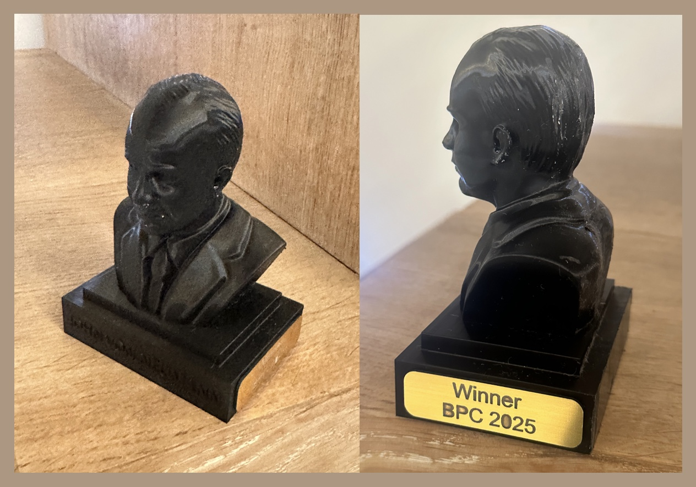
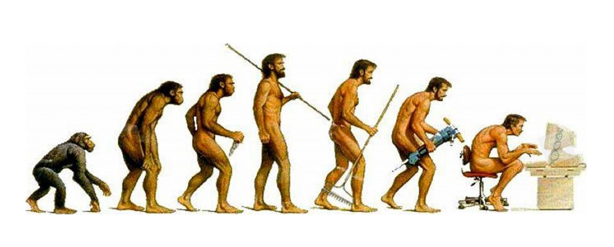

Because not everyone wants to spend their CPU cycles searching for extraterrestrial life. The Bioinformatics Programming Challenge, and the students who won it.

The BPC was created in 2003, sponsored by Biolizard since 2020, and renamed the John von Neumann Award in 2025.
Von Neumann was one of the most influential scientists of the 20th century, whose work laid the foundations of modern computing, numerical analysis and algorithmic thinking. He was a key architect of the stored-program computer — enabling software to be written, modified and optimized, principles central to today's bioinformatics pipelines. His analysis of the structure of self-replication preceded the discovery of the structure of DNA.
The award named after him honours that legacy: computational innovation, rigorous thinking, and the transformative power of algorithms in extracting meaning from complex biological data.
Over the past two decades, these students took part successfully — listed, as in the Guide, in the order they appear there.
Honourable mention: Shauny Van Hoye
Honourable mention: Niel Vanhamel

Homo Ludens Bioinformaticus — for the fun of it.
The Challenge runs each academic year alongside the course. Read the Guide, take the challenge.